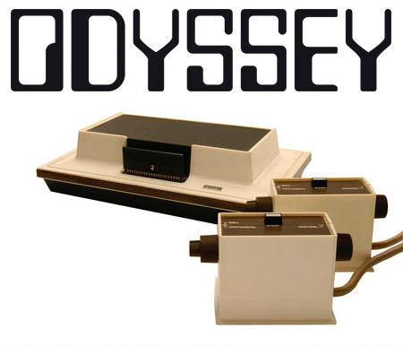

|
Magnavox Oddysey  Magnavox Odyssey fue la primera videoconsola desarrollada por Ralph Baer (apodado “el padre de los videojuegos caseros”) y lanzada en las tiendas norteamericanas a finales del año 1972, convirtiéndose en un éxito de ventas en muy poco tiempo. Se vendieron ese año 100.000 unidades a unos $100 por unidad. -Sus juegos (veintiocho títulos diferentes en total) eran de una sencillez extrema: ping-pong, “tenis de mesa”, voleibol, etc. -Dado su reducido hardware, carecían de sonido y los jugadores debían memorizar sus puntuaciones. -En ocasiones eran necesarios algunos dispositivos adicionales para poder ejecutar determinados videojuegos de la plataforma. -No contenía ningúna unidad central de procesamiento o memoria de acceso aleatorio. La máquina se componía de transistores, resistencias y condensadores. -La Odyssey utilizaba cartuchos intercambiables para los juegos, traía de origen seis cartuchos de juegos, y un manual de usuario de 36 páginas para los doce juegos ofrecidos por el sistema.
|